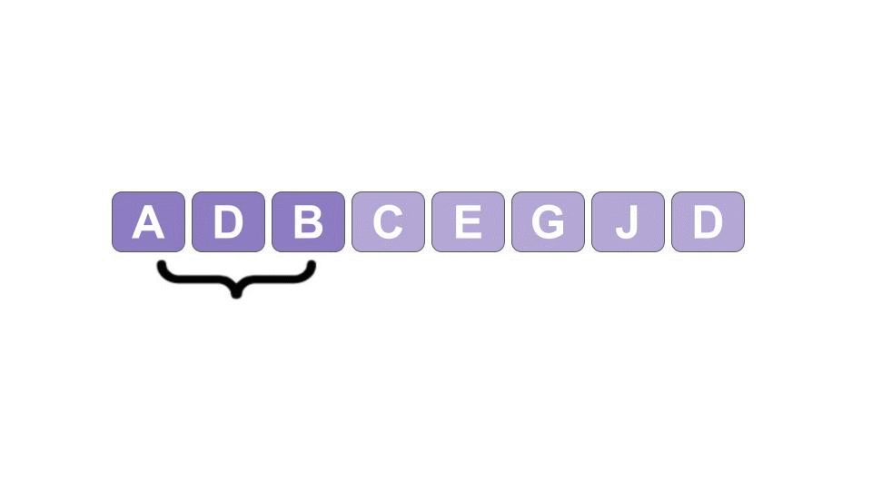
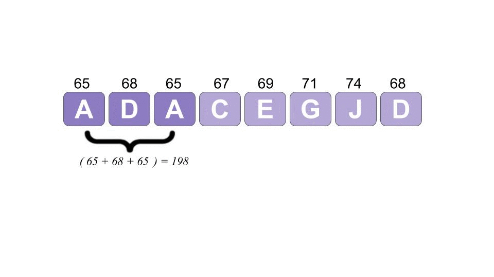
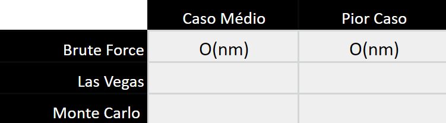
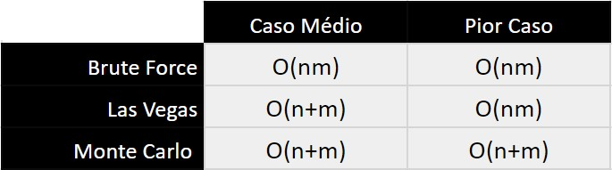

Algoritmo de Rabin Karp
Introdução
Você já sabe um jeito básico para procurar padrões em strings, vamos relembrar:
def stringMatching(text, pattern):
indexes = []
for i in range(len(text)):
if text[i:(len(pattern)+i)] == pattern:
indexes.append(i)
return indexesJá sabemos que essa maneira não é ideal pois tem complexidade \(O(nm)\) e como vocês viram, há outras maneiras mais eficientes de solucionar este problema, vamos implementar mais uma forma.
Hashing
Como já vimos na aula 20, Hashing é um processo que gera uma saída de um valor a partir de uma entrada com tamanho variável. Essa entrada pode ser tanto números quanto caracteres. O valor da saída é conhecido como Hash Value e para chegarmos nesse valor utilizamos uma função chamada de Hashing function. Essa função pode ser implementada de diversas maneiras, porém, mais para frente você vai entender o porquê o tipo de implementação é importante.
Para calcular um Hash Value é utilizado os valores da tabela ASCII respectivos para cada caractere. Você pode acessar a tabela ASCII aqui.
Questão 1
Uma maneira para se obter o hash Value é simplesmente somar o valor da tabela ASCII referente a cada caractere. Vamos ver se você entendeu? Calcule o hash Value da palavra HASH.
Para todas as questões desse handout, após responder, pode avançar e ler a resposta e, caso não entenda, tire dúvidas com a gente.
continuar ou terminar
Resposta da Questão 1
72 + 65 + 72 + 83 = 292Questão 2
Tente pensar em pseudocódigo como implementar essas mudanças no código acima. Você deve comparar os hash Value ao invés de comparar caractere por caractere.
Dica. Pesquise sobre a função Ord em python, ela converte caracteres em seus valores ASCII.
continuar ou terminar
Resposta da Questão 2
Você deve ter chegado em algo parecido com isso:
def stringSearchHash(text, pattern):
indexes = []
pattern_value= 0
#calcula o hash do pattern
for character in pattern:
pattern_value += ord(character)
for i in range(len(text)):
j=i
text_value = 0
if (i+len(pattern)>len(text)):
break
while(j<i+len(pattern)):
text_value+=ord(text[j])
j+=1
#se os valores batem, adiciona o index na lista
if (text_value==pattern_value):
indexes.append(i)
return indexesQuestão 3
Mas ainda temos um problema problema!
É necessário acessar vários caracteres múltiplas vezes para pegar o seu valor. Como é possível observar na simulação abaixo, primeiro é calculado o valor de ADB, ou ,seja o valor de A + D + B, na proxima iteração, é calculado do valor de DBC, ou seja, D + B + C, porém, o valor de D e B que já foi calculado na primeira iteração é recalculado para a segunda.

O código dessa maneira gera uma complexidade de \(O(nm)\), ou seja, não melhorou nada se comparado ao algoritmo Brute force. Você tem ideia de como melhorar esse problema?
Dica. Pense em como poderíamos fazer para não recalcularmos os valores já acessados anteriormente.
continuar ou terminar
Rolling Hash
A solução para melhorar o problema da complexidade é a aplicação do método Rolling Hash, que consiste em manter a maior parte dos números já calculados, evitando o desperdício de tempo e memória que seria recalculá-los. Por exemplo, após o primeiro cálculo do valor de Hash, basta subtrair o valor do primeiro carácter comparado e adicionar o do próximo carácter.
Esta função pode ser visualizada na animação abaixo:

Na simulação acima, o caractere que está em vermelho é subtraído e o que passou de lilás para roxo, é adicionado. A implementação está abaixo.
Não se preocupe se não entendeu tudo, tente pelo menos ter um overview de como funciona.
def RollingHash(text, pattern):
indexes = []
m = len(text)
n = len(pattern)
text_value =0
pattern_value = 0
#calcula o hash do pattern e da primeira sequência do texto
for i in range(n):
pattern_value+= ord(pattern[i])
text_value += ord(text[i])
#se os os hash values batem, já adiciona na lista
if (text_value==pattern_value):
indexes.append(i-(n-1))
for i in range(n,m):
#subtrai o anterior e soma o próximo
text_value = text_value + ord(text[i]) - ord(text[i-(n)])
if (text_value==pattern_value):
indexes.append(i-(n-1))
return indexesQuestão 4
Qual é a complexidade deste código?
continuar ou terminar
Resposta da Questão 4
Como não é necessário calcular parte dos caracteres novamente, ele simplesmente itera pelo tamanho do texto \(m\), no entanto, ainda é necessário calcular o hash do padrão.
Logo, temos uma complexidade \(O(n+m)\), algo melhor que o \(O(nm)\) da implementação Brute force.
Questão 5
Essa Hashing function pode, eventualmente, gerar um problema. Você consegue pensar em qual é? Esse conceito já foi apresentado na aula 20. Reflita um pouquinho antes de continuar.
DICA. Simule as funções acima com as entradas:
TEXT: "O MARCELO HASHIMOTO ESTÁ INDO NA PADARIA PDCM, ALGUÉM QUER PÃO?"
PATTERN: "HASH"
continuar ou terminar
Colisão
Notou algum problema? Esse caso é o que chamamos de colisão. Uma colisão ocorre quando duas ou mais entradas têm o mesmo hash value. No exemplo acima, tanto HASH como PDCM tem o mesmo hash value.
Todas as funções têm chances de ocorrer colisão, mas algumas funções têm menor probabilidade do que outras. Uma boa hash function diminui ao máximo o número de colisões.
Nesta aula utilizaremos a seguinte lei para a função de hashing:
\(Value = X.R_1^{N-1} + X.R_2^{N-2} + X.R_3^{N-3} + ... + X.R_N^0\)
Onde:
- N é a quantidade de caracteres do padrão calculado.
- X é o valor do caractere na tabela ASCII
- R é a quantidade de caracteres do alfabeto utilizado, por exemplo R = 256 para o alfabeto ASCII extendido.
O código abaixo calcula os valores de hash diminuindo a possibilidade de colisões entre padrão e texto, conforme a fórmula mostrada acima e considerando R = 256.
def rabinKarp(text, pattern):
indexes = []
n = len(pattern)
m = len(text)
pattern_value= 0
text_value = 0
r = 256**(n-1)
#calcula o hash do padrão e da primeira sequência do texto
for i in range(n):
pattern_value += ord(pattern[i]) * r
text_value += ord(text[i]) * r
r/=256
if (text_value==pattern_value):
indexes.append(i-(n-1))
for i in range(n,len(text)):
text_value = (text_value - ord(text[i-n]) * 256**(n-1) )*256 + ord(text[i])
#se os valores batem, adiciona o index na lista
if (text_value==pattern_value):
indexes.append(i-(n-1))
return indexesRabin-Karp
O algoritmo de Rabin-Karp consiste em procurar por um segmento de texto que tenha o mesmo hash value do padrão, o seu grande diferencial é utilizar o método rolling hash.
Questão 6
Como mencionado anteriormente, todas as funções têm chances de ocorrer colisão. O algoritmo acima não leva isso em conta pois se os hash values são iguais, ele adiciona o index na lista. Você consegue pensar em um método que elimine esse problema?
continuar ou terminar
Resposta da Questão 6
Uma maneira de contornar isso é, quando os valores de hash batem, checar caractere por caractere se coincide com o padrão. Isso é implementado na versão Las Vegas do algoritmo.
Monte Carlo e Las Vegas
Existem duas classes gerais de algoritimos chamadas de Monte Carlo e de Las Vegas.
A versão Las Vegas sempre retorna a saída correta ou, no pior caso, avisa quando o algoritmo falha, já a de Monte Carlo pode retornar um valor incorreto com uma certa probabilidade.
Com relação ao algoritmo de Rabin-Karp, a Monte Carlo assume que não há nenhuma colisão durante a comparação. Quando o hash value do fragmento do texto bate com o do padrão, nenhuma comparação de caracteres é feita.
Já a de Las Vegas checa se os caracteres são realmente os mesmos, mas isso significa que em um caso em que todos os fragmentos de texto analisados têm o mesmo hash value do padrão, a complexidade seria \(O(nm)\).
Questão 7
Preencha a tabela de complexidade:

continuar ou terminar
Resposta da Questão 7
As comparações de complexidade entre as implementações mencionadas podem ser vistas na tabela abaixo:

A complexidade em um caso médio da implementação Las Vegas é \(O(n+m)\), contudo, em situações nas quais existam muitas colisões, esse nível de complexidade irá aumentar para \(O(nm)\) pois os hashings que coincidirem com o Hash Value desejado irão ser testados caractere a caractere para evitar que existam falsos positivos.
O caso médio da Las Vegas, não é muito diferente do caso médio da Monte Carlo, contudo, vale ressaltar a diferença essencial que ambas possuem. No pior caso da Monte Carlo, a complexidade não é alterada, pois esta não checa os caracteres do hash value caso este seja encontrado na busca ele apenas o julga como positivo verdadeiro.
Sobre o algoritmo
O Rabin-Karp pode ser utilizado como uma ferramenta de busca simples, porém, onde ele tem seu valor destacado é dentro de sistemas de plágio, nos quais parágrafos de textos avaliativos ou científicos são colocados no programa como padrão de busca, enquanto livros e banco de dados relacionados ao tema são colocados como texto onde se quer encontrar alguma incidência de cópia indevida. Nesses casos, como a entrada é grande, o número de colisões se reduz significamente, pois o hash value fica cada vez mais específico e tendendo à ser único. O que garante que nesse tipo de aplicação o programa atue com seu melhor nível de complexidade \(O(n+m)\).
Extra
Você consegue pensar no problema que pode ocorrer quando o padrão a ser calculado é muito extenso? Use a fórmula da hashing function mostrada anteriormente como base.
DICA. inteiros são limitado pelo espaço disponível na memória.
continuar ou terminar
Overflow
Quando o padrão a ser calculado é muito grande, pode ocorrer problema de overflow. Para contornar isso, o algoritmo de Rabin-Karp utiliza hashing modular.
Ou seja, toda vez que um valor de hash é calculado, é feito o módulo desse valor por Q (\(Value = Value \) % Q ), onde Q é um inteiro maior que R (quantidade de caracteres do alfabeto utilizado). Para evitar colisões é interessante que o valor Q seja um número primo.
Abaixo temos o exemplo de um fórmula para calcular um hash value utilizando modulação e técnicas para diminuir a possibilidade de colisões.
\(Value = (( X_{i-1}\) % \(Q + t_{i-1}(Q-R^{M-1} \)%\(Q)).R + t_{1+M-1} % Q )\)